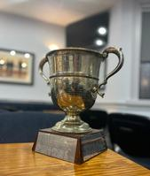
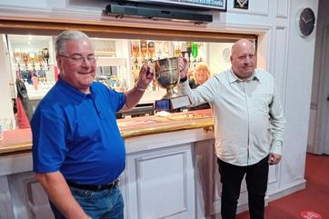
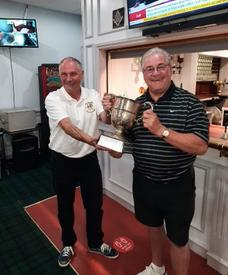
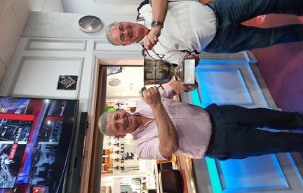
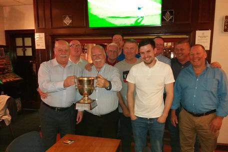
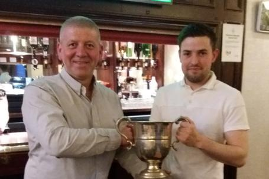

Stevely Cup 13th June 2024 On the 13th June 2024 the Brethren of Lodge Eastmuir and the Companions of Clydesdale RAC once again met in the battle for the coveted Stevely Cup. The leader of the Arch team David Wheatley was attempting to make it three victories in a row having led the Lodge to victory in 2022 then the Arch Team to a win last year in June 2023. RWM David Jones in his normal robust manner was determined that the Lodge would win out, however after another enjoyable evening, MEZ David Wheatley led the Royal Arch Team to another victory. Two in a row for the Arch but Three in a row for David personally. Another great evening and everyone present had a lovely time especially enjoying the food laid on very kindly by the RWM. The RWM is pictured handing over the trophy to the victorious leader of the Royal Arch Team. |
Stevely Cup 1st June 2023The Brethren of Lodge Eastmuir and the Companions of Clydesdale RAC locked horns once again in the tussle for the Stevely Cup. Last year the Lodge were narrow winners and the new RWM Stuart McManus was keen to retain the trophy. MEZ David Wheatley led the Royal Arch Team and after his victory last year when he led the Lodge Team to victory, he was confident of winning again this year. After a very close event the Arch won out by a single point! This was another very enjoyable evening and everyone present had a great time. The RWM is pictured handing over the trophy to the victorius leader of the Royal Arch Team. |
Stevely Cup 2nd June 2022For the first time since 2019, the Brethren of Lodge Eastmuir faced off with the Companions of Clydesdale RAC in the Annual Whist Competition. This event was really looked forward to given that the previous two competitions had to be postponed because of the COVID epidemic. Clydesdale as holders were determined to win the Trophy for the third time in a row and their ME First Principal Ian Haldane was in confident mood as he gathered his team together. RWM David Wheatley was up for the challenge as the battle commenced. Scoring was very level and as the evening progressed and it was clear that the result was going to be close. After the last round the chatter was lively as Secretary Frank Richmond gathered the team scores together. When the result was announced unbelievably both teams has scored 312 Points, a draw, and lots had to be drawn to produce a winner. On the draw of cards The Lodge won out much to the joy of RWM David Wheatley. MEC Ian Haldane handed over the trophy congratulating the Lodge on their victory. The real winners however were everyone who attended and shared in the union and harmony between the brethren and the companions. A great night enjoyed by all. |
Stevely Cup 6th June 2019 The victorious team from Clydesdale Royal Arch Chapter celebrate their victory over Lodge Eastmuir in the annual Whist Challenge - The Stevely Cup. Edward Woods MEH headed up the team from the Arch and was delighted to receive the trophy from Ian Haldane RWM of Eastmuir to make it two years in a row for the Arch. Edward thanked the brethren from the Lodge for making such a good fight of it and the companions of the Arch for their efforts in winning the cup. He had a special word of encouragement for the RWM given that he personally was the lowest scorer on the night! |